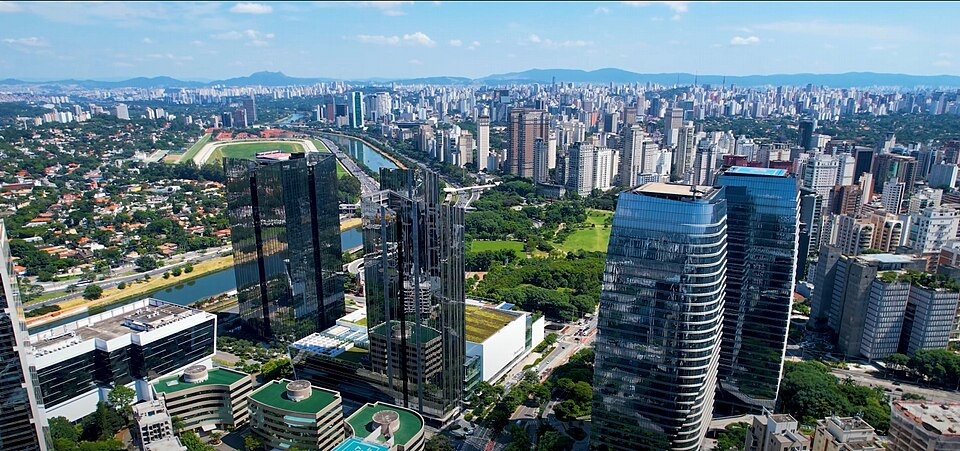
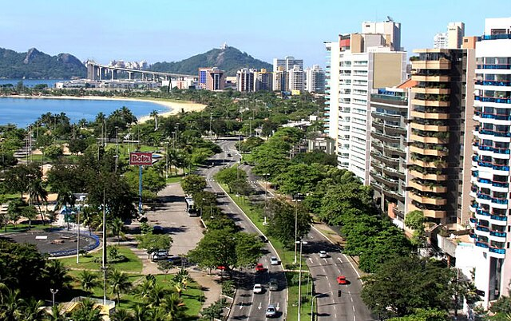

Sobre as Capitais
| Estado | Capital | Adjetivo | Imagem | Informações |
|---|---|---|---|---|
| São Paulo | São Paulo | Paulistano |  | wikipedia |
| Espírito Santo | Vitória | Vitoriense |  | wikipedia |
| Rio de Janeiro | Rio de Janeiro | Carioca |  |
wikipedia |
Curiosidades sobre os Capitais
São Paulo virou capital mais de 120 anos depois de fundada
São Paulo só se tornou capital cerca de 127 anos depois de sua fundação. Segundo o Centro de Memória da Câmara Municipal de São Paulo, a então Vila de São Paulo de Piratininga foi alçada como capital da Capitania de São Vicente (atual estado de São Paulo) em 1711. A antiga capital era a cidade litorânea de São Vicente.
Vitória abriga o maior bairro do Espírito Santo
Na capital capixaba fica o bairro Jardim Camburi, o maior do estado. Os moradores consideram o local como se fosse uma pequena cidade dentro de Vitória, com tudo que precisam sem ter que ir muito longe. Inclusive, o lugar conta com cerca de 39 mil habitantes, segundo dados divulgados pela Prefeitura de Vitória (2010). Parques aconchegantes, a exemplo do Botânico e da Fazendinha, restaurantes para todos os gostos, cinema, shopping, vida noturna e praia: o Jardim Camburi acolhe todos esses lugares em um único ambiente e é carinhosamente chamado de bairro-cidade. Além dos espaços de lazer, o local também agrega uma excelente infraestrutura educacional e imobiliária, com creches, escolas, faculdade e residências. O bairro ainda fica perto do aeroporto e da Praia de Camburi.
O Rio de Janeiro já foi uma capital Europeia
Sim, isso mesmo! Em 1807 as tropas de Napoleão estavam cada vez mais próximas de invadir Portugal para garantir que o pequeno país costeiro se rendesse ao domínio da França. Mas não era que Dom João VI queria. Portanto, ele decidiu fazer as malas e levar todo o seu reino para o Rio, sim, esse foi o desfecho. Depois de sentir como era ser o quartel-general de um império, o Rio já não quis voltar aos dias de antigamente. E a declaração de independência do Brasil aconteceria em só em 1822. Antes disso, era uma extensão da Europa.